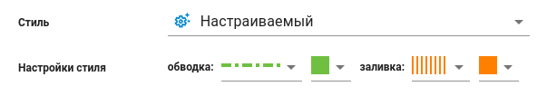

Настройки слоя в проекте
Настройка видимости позволяет управлять отображением слоя на карте в пределах заданных масштабов.
Если в графе минимум (2) поставить значение 13 — объекты на карте скроются при масштабе 1:45 000 и меньше.
Если в графе максимум (3) поставить значение 20 — объекты на карте скроются при масштабе 1:300 и крупнее.
Настройка стиля (4) позволяет выбрать один из 10 базовых стилей или настроить самостоятельно.

В стиле настраивается: